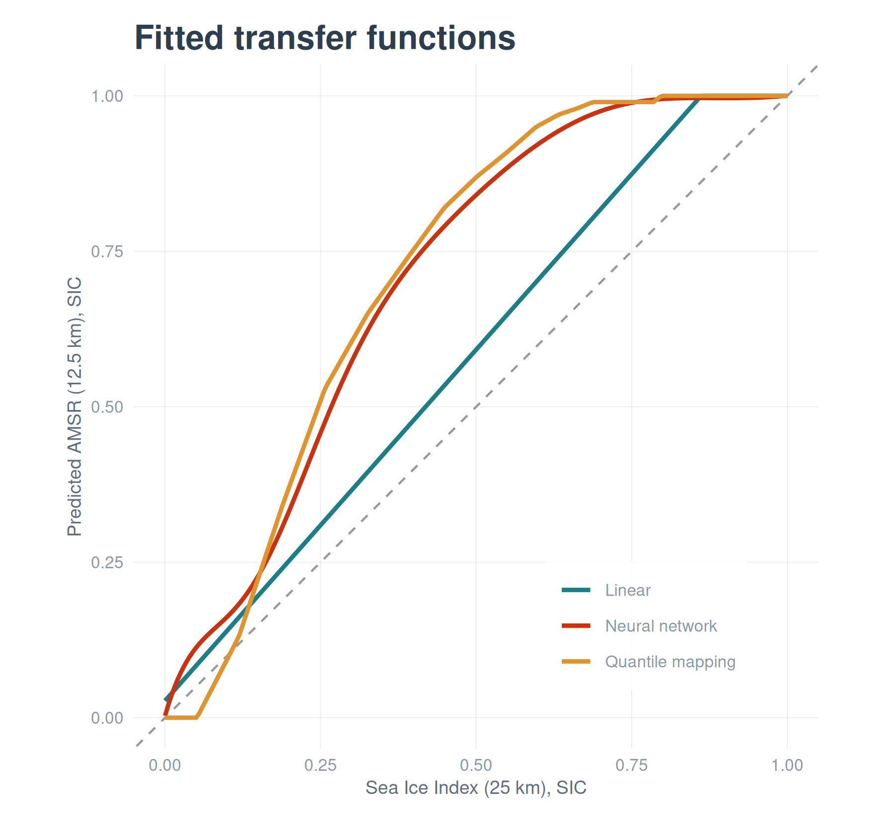

source(here::here("R", "setup.R"))
library(nnet)
paths <- sih_paths()
# Rebuild the paired table (cheap on the sample).
amsr <- load_sic_stack(paths$amsr_dir)
nsidc <- align_products(amsr, load_sic_stack(paths$nsidc_dir))
pairs <- build_pairs(amsr, nsidc)6 Training the transfer model
The transfer function is the heart of the method: a model that takes a coarse-product concentration and returns the fine-product concentration it corresponds to. Following the paper, the model is a small artificial neural network, but a one-input network is simple enough that you should ask whether a straight line would do as well. This chapter fits the network, tunes it, and answers that question by comparing it against a linear fit and a quantile-mapping baseline on held-out data.
6.1 A training and test split
We hold out 20 percent of the paired pixels to judge the models on data they did not see. The neural network is also trained on a random subsample rather than all 1.8 million pairs, which keeps the tutorial fast without changing the fitted relationship in any material way; at full scale you would train on all the pairs or a larger sample, parallelizing the search (see Chapter 9).
set.seed(sih_config$seed)
n <- nrow(pairs)
sub <- if (n > 80000) pairs[sample(n, 80000), ] else pairs
tr <- sample(nrow(sub), sih_config$train_frac * nrow(sub))
train <- sub[tr, ]
test <- sub[-tr, ]
rmse <- function(a, b) sqrt(mean((a - b)^2))6.2 Tuning the network
A single-hidden-layer network has two settings that matter here: size, the number of hidden units, and decay, a weight penalty that guards against overfitting. We search the same grid the paper used and pick the combination with the lowest error on the held-out set. The search uses a modest iteration cap for speed; the chosen model is then refit to convergence.
grid <- expand.grid(size = sih_config$ann_size_grid,
decay = sih_config$ann_decay_grid)
grid$rmse <- NA_real_
for (i in seq_len(nrow(grid))) {
set.seed(sih_config$seed)
m <- nnet(amsr ~ nsidc, data = train, size = grid$size[i], decay = grid$decay[i],
maxit = 150, linout = TRUE, trace = FALSE)
p <- pmin(pmax(predict(m, test), 0), 1)
grid$rmse[i] <- rmse(test$amsr, p)
}
best <- grid[which.min(grid$rmse), ]
grid[order(grid$rmse), ] size decay rmse
8 7 1e-03 0.07268338
13 7 1e-04 0.07269860
15 15 1e-04 0.07272119
14 10 1e-04 0.07274739
10 15 1e-03 0.07274801
7 5 1e-03 0.07276282
9 10 1e-03 0.07276937
12 5 1e-04 0.07278311
11 3 1e-04 0.07278499
6 3 1e-03 0.07278530
5 15 1e-02 0.07278785
2 5 1e-02 0.07278796
1 3 1e-02 0.07278844
3 7 1e-02 0.07278887
4 10 1e-02 0.07278911set.seed(sih_config$seed)
ann <- nnet(amsr ~ nsidc, data = train,
size = best$size, decay = best$decay,
maxit = sih_config$ann_maxit, linout = TRUE, trace = FALSE)6.3 The baselines
The linear baseline is an ordinary least-squares fit of AMSR on the Sea Ice Index. The quantile-mapping baseline is the standard bias-correction trick: it lines up the two products’ value distributions, mapping each coarse value to the fine value at the same quantile. Both are one-line ideas, which is the point; if the network cannot beat them, it is not earning its complexity.
linear <- lm(amsr ~ nsidc, data = train)
qmap_fit <- function(x, y, probs = seq(0, 1, 0.01)) {
list(qx = quantile(x, probs, na.rm = TRUE), qy = quantile(y, probs, na.rm = TRUE))
}
qmap_predict <- function(fit, x) approx(fit$qx, fit$qy, xout = x, rule = 2)$y
qm <- qmap_fit(train$nsidc, train$amsr)
clamp01 <- function(p) pmin(pmax(as.numeric(p), 0), 1)
preds <- list(
"Raw (no harmonization)" = test$nsidc,
"Linear" = clamp01(predict(linear, test)),
"Quantile mapping" = clamp01(qmap_predict(qm, test$nsidc)),
"Neural network" = clamp01(predict(ann, test))
)
data.frame(
method = names(preds),
rmse = round(sapply(preds, function(p) rmse(test$amsr, p)), 4),
row.names = NULL
) method rmse
1 Raw (no harmonization) 0.1462
2 Linear 0.1074
3 Quantile mapping 0.0741
4 Neural network 0.0724The network gives the lowest held-out error, the linear and quantile fits land close to each other in the middle, and all three improve substantially on doing nothing. The improvement is not because the network is complex; it is because the relationship in Chapter 5 bends, and a straight line cannot follow the curve near the ice edge while the network can. The transfer functions make that visible.
gx <- data.frame(nsidc = seq(0, 1, 0.005))
curves <- data.frame(
nsidc = gx$nsidc,
Linear = clamp01(predict(linear, gx)),
`Quantile mapping` = clamp01(qmap_predict(qm, gx$nsidc)),
`Neural network` = clamp01(predict(ann, gx)),
check.names = FALSE
) |>
tidyr::pivot_longer(-nsidc, names_to = "method", values_to = "amsr")
ggplot(curves, aes(nsidc, amsr, color = method)) +
geom_abline(slope = 1, intercept = 0, linetype = "dashed", color = "grey60") +
geom_line(linewidth = 1) +
scale_color_manual(values = c("Linear" = COLORS$accent_teal,
"Quantile mapping" = COLORS$accent_amber,
"Neural network" = COLORS$accent_red),
name = NULL) +
coord_equal(xlim = c(0, 1), ylim = c(0, 1)) +
labs(title = "Fitted transfer functions",
x = "Sea Ice Index (25 km), SIC", y = "Predicted AMSR (12.5 km), SIC") +
theme_bri() + theme(legend.position = c(0.75, 0.18))
We save the fitted network so the next chapter can apply it without retraining.
w <- sih_work_dir()
saveRDS(ann, file.path(w, "ann_model.rds"))
saveRDS(best, file.path(w, "best_params.rds"))